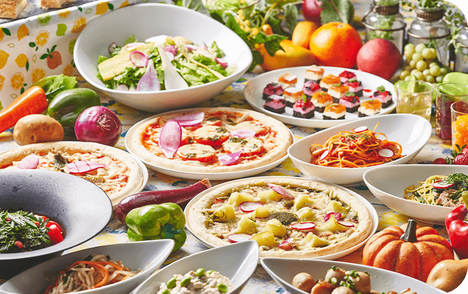
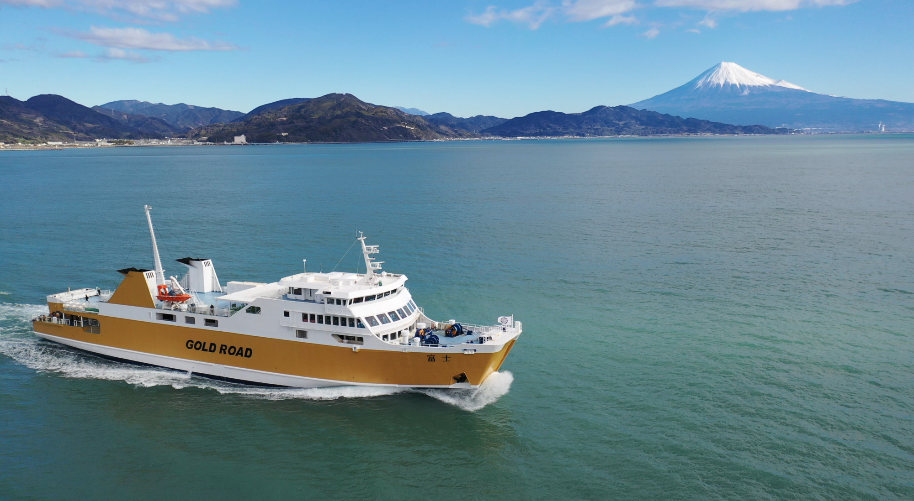
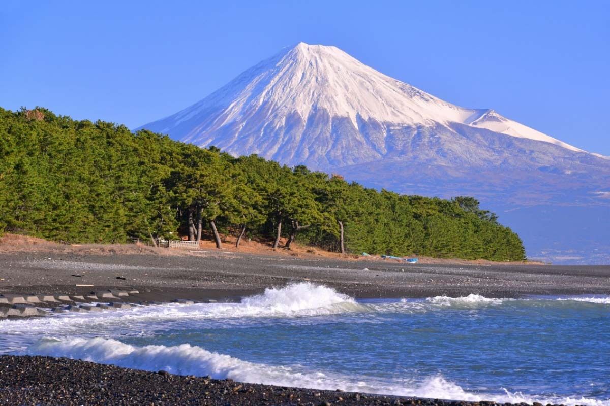
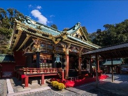

中部コンピュータ・パティシエ専門学校
歴史と富士の絶景、海の幸を満喫する静岡・清水の旅
※各スポットをクリックすると、詳細ページが開きます。

清水港のヨットハーバーを目の前に望む複合商業施設。大人気のビュッフェランチを堪能します。Clickして詳細へ ➔

潮風を感じながら約40分間の船旅へ。富士山のパノラマビューを満喫。Clickして詳細へ ➔

青い海と緑の松林、富士山の絶景名所。「羽衣伝説」の舞台を散策。Clickして詳細へ ➔

徳川家康公が眠る国宝の社殿。歴史とパワーあふれる名所を見学。Clickして詳細へ ➔